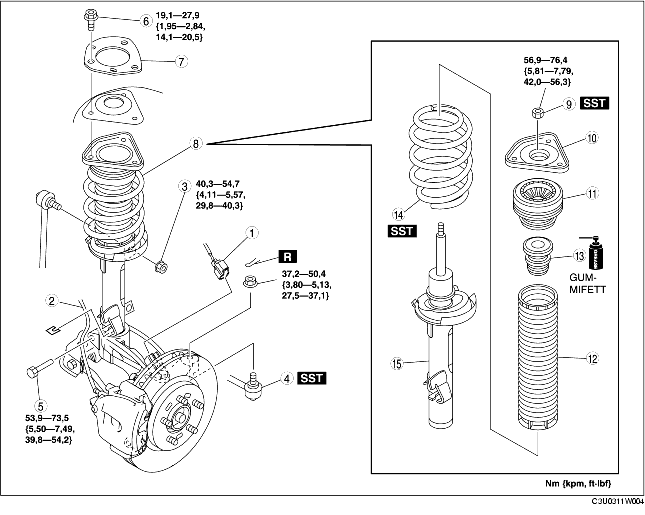

DEMONTERING/MONTERING AV FRÄMRE STÖTDÄMPARE OCH SPIRALFJÄDER
B3E021304910W01
-
Försiktigt
-
• Om följande procedur utförs utan att först demontera ABS-hjulhastighetsgivaren kan det uppstå avbrott i kablaget om du drar i givaren av misstag. Innan du utför följande procedurer, koppla ur ABS-hjulhastighetsgivarens kablage (kontakt på axelsidan) och fixera kablaget på lämpligt sätt så att det inte går att dra i det av misstag under fordonsservice.
1. Demontera i den ordning som anges i tabellen.
2. Montera i omvänd ordning mot demonteringen.
3. Kontrollera att camber- och castervinklar ligger inom angivna värden.
-
• Om de inte ligger inom angivna värden, rikta in kolvstångsmuttern med stötdämparens centrum och spiralfjädern igen. (Se Observera vid montering av främre stötdämpare och fjäder.)
4. Kontrollera total toe-in och justera vid behov. (Se HJULINSTÄLLNING FRAM.)

.
|
1
|
Kontakt/kablage för ABS hjulhastighetsgivare
|
|
2
|
Bromsslang
|
|
3
|
Krängningshämmarens övre länkarmsmutter
|
|
4
|
Kulled styrstag
|
|
5
|
Nedre stötdämparbult
|
|
6
|
Övre stötdämparbult
|
|
7
|
Förstärkningsbricka
|
|
8
|
Stötdämpare och fjäder
|
|
9
|
Kolvstångsmutter
|
|
10
|
Gummifäste
|
|
11
|
Lager
|
|
12
|
Dammdamask
|
|
13
|
Nedre genomslagsgummi
|
|
14
|
Spiralfjäder
|
|
15
|
Främre stötdämpare
|
Observera vid demontering av främre stötdämpare och fjäder
1. Lossa främre länkarmens inre skruv.
2. Separera stötdämparen och hjulnavet samt styrsleden genom att knacka på den övre delen av styrleden med en hammare.
Observera vid demontering av kolvstångsmutter
-
Varni ng
-
• Innan du demonterar kolvstångsmuttern, säkra stötdämpare och fjäder i specialverktygen (SST). Annars kan fjädern flyga iväg under enormt högt tryck och orsaka allvarliga personskador eller dödsfall, eller fordonsskador.
1. Montera vid specialverktygen och använd ett tygstycke så att inte fjädern repas.
2. Pressa ihop spiralfjädern med specialverktygen, och avlägsna kolvstångens mutter.
Observera vid montering av spiralfjäder
1. Pressa ihop spiralfjädern med specialverktygen.
2. Montera stötdämparen så att nedre ändan av spiralfjädern vilar på nedre fjädersätets avsats.
Observera vid montering av dammdamask
1. Montera dammdamasken genom att haka fast nedre kanten över stötdämparens kant.
Observera vid montering av lager
1. Montera lagret genom att haka fast den övre änden av dammdamasken vid lagrets kant.
2. Rikta in klacken A på stötdämparens nedre del med klacken B på lagret.
Observera vid montering av främre stötdämpare och fjäder
1. Rikta in kolvstångsmuttern med centrumlinjen på den del där stötdämparen monterats, genom att placera kolvstångsmuttern så att alla längder A är samma, och dra åt stötdämparens övre muttrar.
2. Rikta in spindelns skåra med klacken A på stötdämparens nedre sida.
3. Höj upp den främre länkarmen med en domkraft och montera stötdämpare och fjäder.
Observera vid montering av förstärkningsbricka
1. Montera förstärkningsbrickan så att märket (RH/höger eller LH/vänster) är riktat uppåt.